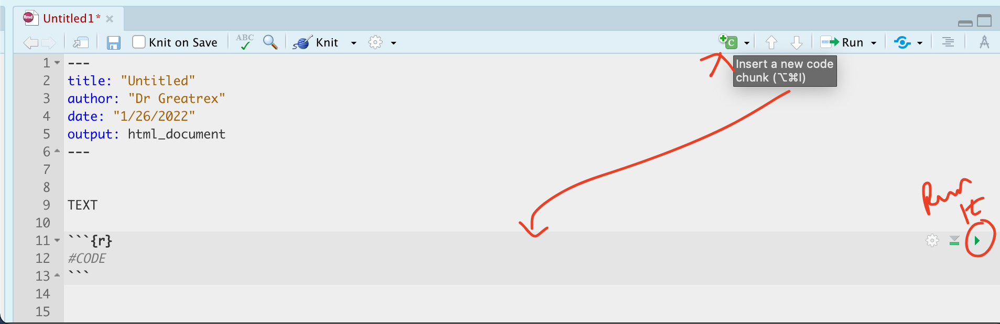

Lab 1: R Introduction
The aim of Lab 1 is to get comfortable in R and in R-Markdown and to make sure that both are installed properly. It is a “one week lab” and you can find the Canvas page here: https://psu.instructure.com/courses/2260204/assignments/15455191
Instructions are below, linking to relevant tutorials in the tutorials tab. If I suggest using a tutorial, the answers WILL be there.
Finally, if the labs are causing major problems or you have any other software issue, talk to Dr Greatrex or Harman. What do I mean by struggling? More than 15-20 minutes without progress.
Lab instructions
A. Select Lab Groups
We will be doing an in-class exercise to choose lab groups
- WEDNESDAY LAB: Please fill in this survey: https://forms.gle/Uf7T5Hh7895Y7G6DA
- FRIDAY LAB - same link but wait until Friday
B. Review FAQ
Review The LAB FAQ LINK FIXED - you can find it in the Labs menu at the top of the page. It explains
- What you need to submit
- How you are graded and where the rubric is
- The late policy
- What counts as cheating
D. Initial Semester set-up
Follow TUTORIAL 2 to install everything needed for the GEOG-364 this semester.
E. Lab 1 set-up
I strongly suggest you CLOSELY follow TUTORIAL 3 - CORRECT LINK to install everything needed for lab 1. By the end of Tutorial 3, you should be running an R-project for Lab 1, which is placed inside a GEOG364 folder on your computer. Your global settings should be adjusted - and you have opened, knitted and removed the “friendly text” below your YAML code. You should know what things like YAML code are!
You should now have a blank file in front of you, other than the YAML code. If not, ask for help.
Final hint, to help with formatting, you might find it easier to use the markdown visual text editor through clicking the button on the top left. Here’s the difference between writing your reports in ‘source’ mode (near the top left) vs ‘visual’ mode.

F. Comprehension questions
Write the word Introduction in the main body of the text - make it a Header 1 format. Leave a few blank lines above and below it. Press knit, check it worked.
Now copy each of the questions below into your report. Make each one “Header 3” format.
Underneath each question write your answer. At least 3 or 4 sentences for each one.
QUESTION 1:
In your own words, explain the course late policy
Hint, Lab FAQs)QUESTION 2:
When are Dr G’s office hours? Should I email or Canvas Message to get help fast? Hint, see CanvasQUESTION 3:
Are you allowed to copy/paste anyone else’s code or text in your submission? Explain your answer. Hint, Lab FAQs)QUESTION 4:
Use something like Spotify (a computer programme that plays custom playlists of music) to explain the difference between R and R-Studio. Hint, Tutorial 1)QUESTION 5:
Explain the range of different formats a markdown document can be made into. Hint, Tutorial 1)
F. Code showcase
Now, leave another new blank line and add a new Level 1 Header called “Code Showcase”. Add a blank line afterwards too - the reason for all the blank lines is that R formatting often gets messed up with not enough blank lines, but it will ignore excess ones.
Create a separate code chunk for each problem below.

Inside use R code to calculate the answers. You HAVE
to show the code You’re allowed to either use separate code chunks or
one large one with all the commands.
IF YOU DON’T IMMEDIATELY KNOW HOW TO DO THESE,FOLLOW Tutorial 4 INCLUDING THE VIDEO!
- 1033 (e.g
103*103*103, or103^3)
- The co-sine of your age (google is your friend, google R function or
example for cosine)
- How many characters are in the
longest town name in Wales
Llanfairpwllgwyngyllgogerychwyrndrobwllllantysiliogogogoch.
- Hint 1, remember you can copy paste this name into your code.
- Hint 2, the command is available in the tutorials..
- Hint 3, you can google any R command, try googling the “R
command for number of characters in a word”.
- Hint 1, remember you can copy paste this name into your code.
Press “knit” at the top of the screen . If you have a made a mistake and it doesn’t knit, stop and fix before continuing.
H. Submitting your Lab
Remember to save your work throughout and to spell check! (next to the save button). Now, press the knit button one final time.
On R-Desktop
If you have not made any mistakes in the code then R should create a html file in your lab 1 folder which includes your answers.
If you look at your lab 1 folder on your computer, you should see this there - complete with a very recent time-stamp. Double click on the html file. This will open it in your web-browser.
CHECK THAT THIS IS WHAT YOU WANT TO SUBMIT.
On Rstudio cloud,
- See TUTORIAL
3 Cloud - LINK FIXED for how to download your files
Finally, go to Canvas and submit BOTH your html and your .Rmd file in Lab 1.

How am I graded?
Look on Canvas, there will be a SPECIFIC RUBRIC that we use to grade your lab. USE IT!!! It should allow you to predict your grade. We will also include comments with our feedback in every lab.
Overall, here is what your lab should correspond to:
| POINTS | Approx grade | What it means |
|---|---|---|
| 98-100 | A* | Exceptional. Above and beyond. THIS IS HARD TO GET. |
| 93-98 | A | Everything asked for with high quality. Class example |
| 85-93 | B+/A- | Solid work but the odd mistake or missing answer in either the code or interpretation |
| 70-85 | B-/B | Starting to miss entire/questions sections, or multiple larger mistakes. Still a solid attempt. |
| 60-70 | C/C+ | It’s clear you tried and learned something. Just attending labs will get you this much as we can help you get to this stage |
| 40-60 | D | You submit a single word AND have reached out to Dr G or Aish for help before the deadline (make sure to comment you did this so we can check) |
| 30-40 | F | You submit a single word……. ANYTHING.. Think, that’s 30-40 marks towards your total…. |
| 0+ | F | Didn’t submit, or incredibly limited attempt. |